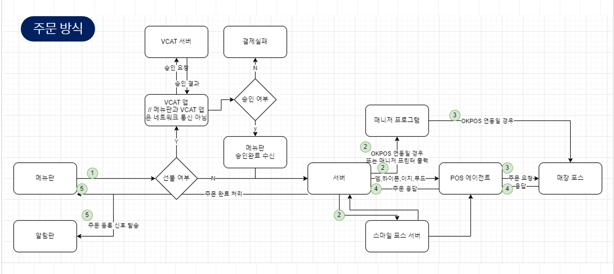

← 자료실로 돌아가기
하이오더 망구조
안정적인 서비스 운영을 위한 하이오더 망 구성도입니다.

| 하이오더 주문방식 설명 | |
|---|---|
| 1. 주문 생성 | 고객이 태블릿 메뉴판에서 메뉴를 선택하고 '주문하기'를 누릅니다. |
| 2. 주문 처리 과정 |
|
| 3. 주문 정보 전송 |
|
| 4. 주문 확인 및 응답 |
|
| 5. 주문 완료 및 알림 |
|